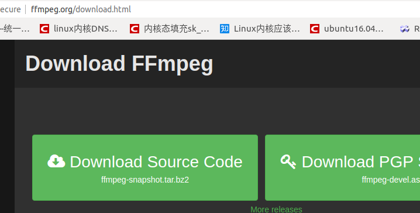
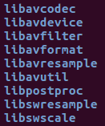
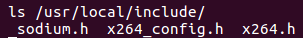
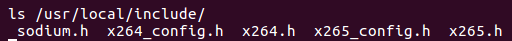
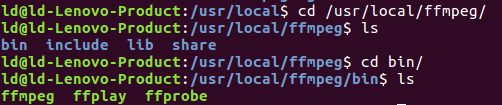
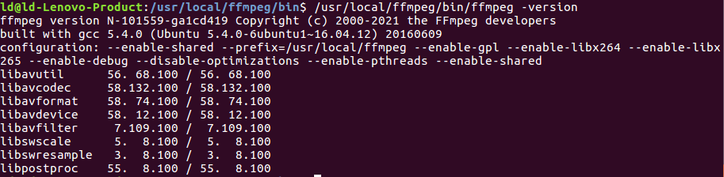
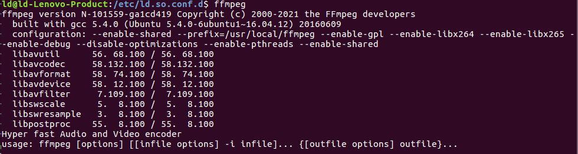

安装与测试
基于Ubuntu16.04
一、FFmpeg的下载
1.1 git命令下载源码
1.2 官网下载源码：http://www.ffmpeg.org/download.html

1.3 文件解压
1.4 目录分析

1）libavcodec：音视频编解码库；（不做具体编解码操作，只是调用H264、H265...）
2）libavdevice：音视频输出输入设备库；（sdl显示设备，alsa音频输出设备，opengl图形加速设备，v4l2视频设备（比如摄像头）...的采集）
3）Libavfilter：音视频滤镜库，滤镜主要是用来实现图像的各种特殊效果；
4）libavformat：音视频格式库，用于各种音视频封装格式的解析和封装；
5）libavutil：音视频工具库，包含一些公共的工具函数；
6）libpostproc：音视频后期效果处理库；
7）libavresample：音频重采样；
8）libswresample：功能和libavresample十分类似，是FFmpeg相对早期的实现方法；
9）libswscale：视频场景比例缩放、色彩映射转换库；
二、FFmpeg配置与安装
2.1 安装依赖库yasm、libx264、libx265（后面会用到）
1. yasm等库安装
sudo apt-get update
sudo apt\-get -y install autoconf automake build-essential libass-dev libfreetype6-dev libtheora-dev libtool libvorbis-dev pkg-config texinfo zlib1g-dev
sudo apt-get install libfdk-aac-dev
sudo apt-get install libmp3lame-dev
sudo apt-get install yasm
2. libx264安装
下载地址：http://www.videolan.org/developers/x264.html
(1) 安装依赖
(2) 进入解压后的源代码目录
(3) 查看文件

3.libx265安装
下载地址：http://www.videolan.org/developers/x265.html
(1) 安装依赖，使得支持hg命令下载libx265
(2) 进入./x265_2.9/build/linux目录
(3)查看文件

2.2 配置命令及安装（尽可能多配置，比如libfdk-aac后面会用于音频编解码）
./configure --enable-shared --prefix=/usr/local/ffmpeg --enable-gpl \
--enable-libx264 --enable-libx265 --enable-debug --disable-optimizations \
--enable-pthreads --enable-libass --enable-libfdk-aac --enable-libfreetype \
--enable-libtheora --enable-libvorbis --enable-libmp3lame --enable-nonfree \
--enable-gpl
sudo make && sudo make install

2.3 配置环境变量
ubuntu通过源码安装软件未进行环境变量配置，找不到启动路径。
如果直接使用ffmpeg -version会报错：
ffmpeg: error while loading shared libraries: libavdevice.so.58: cannot
open shared object file: No such file or directory
(1) 打开动态库配置文件
(2) 添加路径信息
(3) 更新配置文件
2.4 测试命令

2.5 配置环境变量（使得直接使用ffmpeg命令）
(1) 临时设置：
(2) 当前用户的全局设置：
添加bin目录到环境变量文件中：
使之生效：
直接测试ffmpeg:

(3) 所有用户的全局设置
修改 /etc/profile 即可，使用 source profile 生效